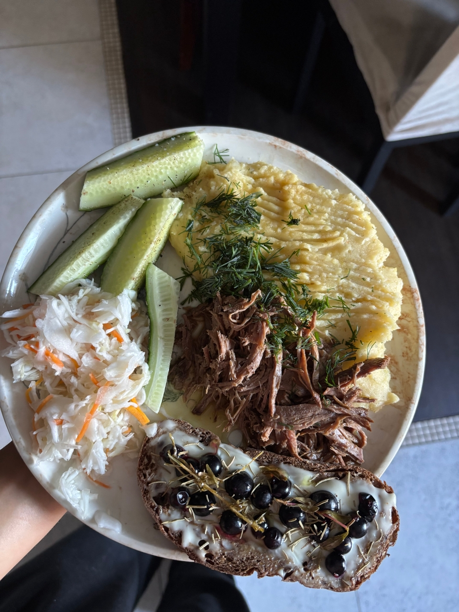
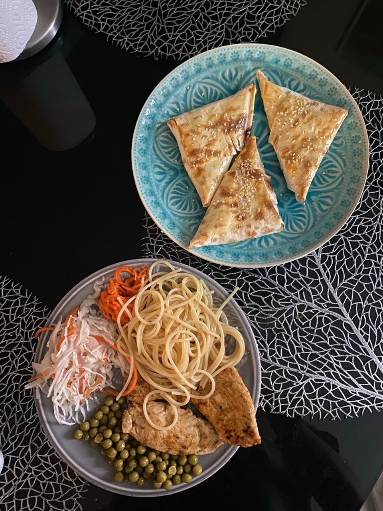
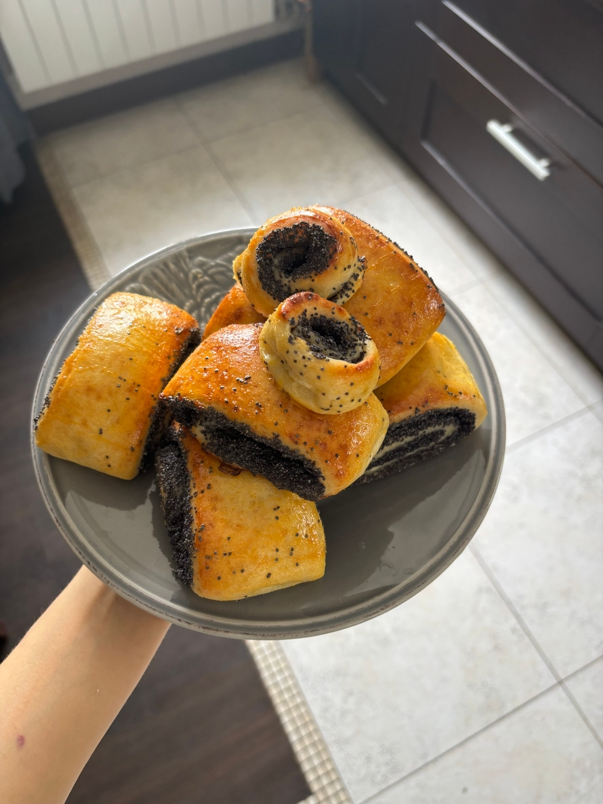

Продуктова корзина
1. Нежирные источники белка
- Филе курицы/индейки
- Творог
- Греческий йогурт
- Сыр с низким содержанием жира
- Нут
- морепродукты (кальмар, белая рыба, креветки и тд)
- субпродукты из курицы и тд
2. Источники жиров
- орехи
- жирный творог, сметана
- рыба (сельдь, горбуша, скумбрия и тд)
- сливочное, растительное масло
- арахисовая или другие ореховые пасты
- сыры
- авокадо,оливки,маслины и тд
3. Источники углеводов
- долгое насыщение :
- гречка
- булгур
- геркулес долгой варки
- перловка
- ячневая крупа
- пшеничная крупа
- полба
- быстрая энергия перед тренировкой:
- рис
- макароны
- манка
- хлеб
- пряники
- зефир,мармелад
Подборка моих тарелок



- название рецепта 1
- название рецепта 2
- название рецепта 3
Мой тренировочный план.Принцип составления
Я составляла тренировочный план с учетом нескольких фактороф :
- наличие сколиоза и проблем с осанкой
- время на тренировку ~ 90 минут
- возможность ходить в зал 3 раза на силовую тренировку и 1 раз на кардио
- цель - набрать мышечную массу и снизить процент жира
Таким образом, я пришла к тому, что, используя базовые упражнения и немного изоляции, а также , повысив уровен бытовой активности, я приду к желаемой форме
- Тренировка 1:
- 1.Ягодичный мост
- 2.Жим по одной ноге
- 3.Румынская тяга
- 4.Разведения в тренажере
- 5.Сгибания на заднюю поверхность бедра
- 6.Комплекс на укрепление мышц кора
- Тренировка 2:
- Тяга верхнего блока
- Тяга горизонтального блока
- Жим на грудь в тренажере
- Разгибания на трицепс
- Махи на плечи
- Отведения лежа на скамейки (дельты)
- Тренировка 3:
- Ягодичный мост
- Болгарские выпады
- Румынская тяга
- Разведения в тренажере
- Махи в кроссовере
- Гиперэкстензия на поясницу
- Тренировка 4:
- Кардио час на лесенке
Мои основные принципы и лайфхаки
- принцип 1
- принцип 2
- и тд